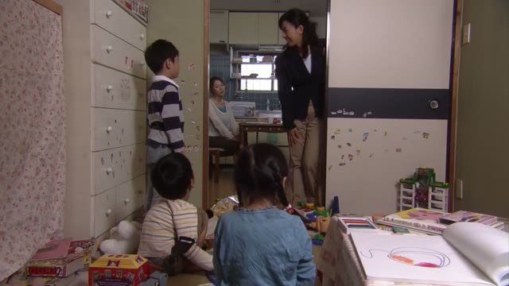

～ところ
Samurai Champloo · Episode 10
人手不足で困っていたところなのですよ。
"We were just struggling for lack of hands."
ところ ("place, point") marks where you are in an action. The verb form before it says which point: dictionary form = about to (行くところ), ている = in the middle of (行っているところ), た-form = just did (行ったところ).
On this card, the monk is glad three travelers showed up: they were short of help right then. ていたところ: right in the middle of that situation. なのです makes it polite.
In speech it's often shortened to とこ: 今来たとこ.
Shirokuma Cafe · Episode 7
僕も、今来たところだよ。
"I just got here too." [the classic date reply]
On this card, Panda practices a date: "did you wait?" "No, I just got here". 来たところ: the moment right after arriving.
Quick Examples
Your friend calls as you leave.
今、出るところ。
"I'm just about to leave."
Dictionary form: about to.
CasualYour boss asks about a report.
今、書いているところです。
"I'm writing it right now."
ている: in the middle of it.
PoliteYour friend asks if you've eaten.
ちょうど食べたところ。
"I just ate."
た-form: just finished.
CasualA guest arrives at the station.
今着いたところです。
"I've just arrived."
PoliteWith and without
今、出る。
"I'm leaving now." Plain.
今、出るところ。
"I'm just about to leave." The exact moment.
Examples from Media
Shirokuma Cafe · Episode 13
ちょうど飾りつけが終わるところだよ。
"We're just about to finish decorating."
Death Note · Episode 1
ああ、今支度してるとこ。
"Yeah, I'm getting ready right now."
てる + とこ: in the middle of it.
Aggretsuko · Season 1, Episode 3
ざっと計算してるところだ。
"I'm doing a rough calculation right now."
Oishinbo · Episode 12
ちょうど今欲しかったところなのよ。
"That's just what I wanted right now."

1 Litre of Tears · Episode 2
これから作るところだから。
"I'm about to make it now."
Answer to "have you had lunch?".
Dungeon Meshi · Episode 15
戻れなくなるとこだった～。
"I almost couldn't get back!"
るところだった = almost happened.
Vinland Saga · Episode 15
昨日、３台目にかかったとこだ。
"We only just started the third one yesterday."
About the sleds.
Kotaro Lives Alone · Episode 10
お主の販売店に電話するところであった。
"I was about to call your shop."
Kotaro's old-style speech: であった = だった.